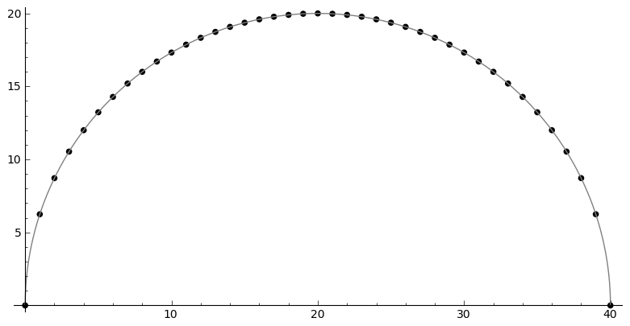

Angular Momentum and Racah's formula
1 Angular Momentum Operators and \(\mathfrak{su}(2)\) Representation
\(J_x,J_y,J_z \in \mathfrak{su}(2)\)
\begin{equation} \label{} [J_i,J_j] = i\epsilon_{ijk}J_k \end{equation}The Casimir operator \(J ^2 = J_x^2 + J_y^2 + J_z^2\) and the ladder operators \(J_{\pm}=J_x\pm iJ_y\)
\begin{eqnarray} \left[J^2,J_i\right] &=& 0\\ \left[J_z,J_{\pm}\right] & = & \pm J_{\pm} \\ \left[ J_+,J_- \right] &=& 2J_z\\ J^2 & = & J_-J_+ +J_z^2 + J_z \\ &=& J_+J_- +J_z^2 - J_z \end{eqnarray}Let \(V\) be a finite dimensional vector space over \(\C\) and \(\varphi:\mathfrak{su}(2) \rightarrow \mathbf{End}(V)\) be its associated representation. Simultaneous eigenvector \(\ket{jm}\):
\begin{equation} \label{} J^2\ket{jm} = j(j+1)\ket{jm}, \quad J_z\ket{jm} = m\ket{jm} \end{equation}2 The ladder operators' coefficients
It is useful to write \(\ket{jm}\) in terms of \((J_{-})^k \ket{jj}\). So, let us rewrite the coefficients in simpler notation;
\begin{equation} \label{ } J_{-} \ket{jj-(k-1)} = f(j,k)\ket{j j-k} \end{equation}where
\begin{eqnarray*} f(j,k) := \sqrt{k(2j - k +1)} \;,1\le k \le 2j \end{eqnarray*}

We also have
\begin{equation} \label{ } J_{+}\ket{j j-k} = f(j,k)\ket{j j-k+1} \end{equation}
Note that \(D := 2j+1\) is the dimension of the \(j\)-th representation space.
Hence
where \(F(j,k) = \prod_{i=1}^{k} f(j,i)\) and evaluated as,
\begin{eqnarray} F(j,k) & = & \sqrt{k(2j+1 - k)(k-1)(2j+1 -(k-1))\times \cdots \times 2\cdotp (2j+1 -2) \cdot 1 \cdot (2j+1 -1)} \nonumber\\ & = & \sqrt{k(D - k)(k-1)(D -(k-1))\times \cdots \times 2\cdotp (D -2) \cdot 1 \cdot (D -1)}\nonumber\\ & = & \sqrt{\frac{k!(2j)!}{(2j -k)!}} = k!\sqrt{_{2j}C_{k}} \end{eqnarray}and \(F(j,0)=1\)
3 Recursion Relations for Clebsch-Gordan coefficients
Apply \(J_+ = j_{1+} + j_{2+}\) take inner product with \(\bra{j_1j_2m_1m_2}\)
\begin{eqnarray} &&\sqrt{J(J+1) - M(M+1)}\inn{j_1 m_1j_2m_2}{JM+1} \nonumber\\ &&= \sqrt{j_1(j_1+1) - m_1(m_1-1)}\inn{j_1 m_1-1j_2m_2}{JM} + \sqrt{j_2(j_2+1) - m_2(m_2-1)}\inn{j_1 m_1j_2m_2-1}{JM}\nonumber\\ \end{eqnarray}and \(J_- = j_{1-} + j_{2-}\)
\begin{eqnarray} &&\sqrt{J(J+1) - M(M-1)}\inn{j_1 m_1j_2m_2}{JM-1} \nonumber\\ &&= \sqrt{j_1(j_1+1) - m_1(m_1+1)}\inn{j_1 m_1+1j_2m_2}{JM} + \sqrt{j_2(j_2+1) - m_2(m_2+1)}\inn{j_1 m_1j_2m_2+1}{JM}\nonumber\\ \end{eqnarray}4 Explicit formulae for Clebsch-Gordan coefficinets
4.1 \(\inn{j_1j_2m_1m_2}{JM}\)
Define \(d=j_1+j_2 -J\), (\(j_1 > j_2\) and \(0\le d \le 2j_2\)), and \(L = J-M\). Let us determine the coefficients of the top spin state
\begin{eqnarray} \ket{JJ} &=& a_0\ket{j_1j_1}\ket{j_2j_2-d} + a_1\ket{j_1j_1-1}\ket{j_2j_2-d+1} + \cdots + a_d\ket{j_1j_1-d}\ket{j_2j_2} \nonumber\\ & = & \sum_{i=0}^{d} a_i\ket{j_1j_1-i}\ket{j_2j_2-d+i} \end{eqnarray}by imposing the top spin condition
\begin{equation} \label{ } J_{+}\ket{JJ} = 0 \implies a_{i+1}=-\frac{f(j_2,d-i)}{f(j_1,i+1)}a_i \quad (i=0,\ldots,d-1), \end{equation}which means
\begin{eqnarray} a_{i} & = & -\frac{f(j_2,d-(i-1))}{f(j_1,i)}a_{i-1} \quad (i=1,\ldots,d)\\ & = & (-1)^i\frac{f(j_2,d-(i-1))f(j_2,d-(i-2)) \cdots f(j_2,d-1)f(j_2,d)}{f(j_1,i)f(j_1,i-1) \cdots f(j_1,2)f(j_1,1)}a_{0} \\ & = & (-1)^i\frac{F(j_2,d)}{F(j_1,i)F(j_2,d-i)} a_{0} \end{eqnarray}Here \(F(j_2,0)=1\).
4.2 Normalisation
Normalisation condition \(\inn{JJ}{JJ}=1\) yields
\begin{eqnarray} \frac{1}{a_{0}^2} & = & \sum_{i=0}^{d}\frac{F(j_2,d)^2}{F(j_1,i)^2F(j_2,d-i)^2}\\ & = & 1+\left[ \frac{f(j_2,d)}{f(j_1,1)} \right]^2+ \cdots + \left[\frac{f(j_2,d-(i-1))f(j_2,d-(i-2)) \cdots f(j_2,d-1)f(j_2,d)}{f(j_1,i)f(j_1,i-1) \cdots f(j_1,2)f(j_1,1)}\right]^2 + \nonumber\\ & & \cdots + \left[\frac{F(j_2,d)}{F(j_1,d)} \right]^2 \nonumber\\ & = & \frac{1}{F(j_1,d)^2} \bigg\{ (D_1-d)\cdot d\cdots (D_1-2)\cdot 2 \cdot (D_1 -1) \cdot 1 +(D_1-d)\cdot d\cdots (D_1-2)\cdot 2 \cdot (D_2-d)\cdot d + \nonumber\\ & & \cdots + (D_1-d)\cdot d\cdots (D_1-i-1)\cdot (i+1) \cdot (D_2 -(d-i+1)) \cdot (d-i+1) \cdots (D_2-d)\cdot d + \cdots \bigg\} \nonumber\\ & = & \frac{1}{F(j_1,d)^2} \bigg\{ \frac{(d!)^2}{d!}(D_1-d)\cdot (D_1-2)\cdot (D_1 -1) + \frac{(d!)^2}{1!(d-1)!}(D_1-d)\cdots (D_1-2) \cdot (D_2-d) + \nonumber\\ & & \cdots + \frac{(d!)^2}{i!(d-i)!}(D_1-d)\cdot (D_1-i-1) \cdot (D_2 -(d-i+1)) \cdots (D_2-d) + \cdots \bigg\} \nonumber \end{eqnarray}Writing
\begin{eqnarray} G_i(j_1,j_2,d) &:=& \frac{F(j_1,d)F(j_2,d)}{F(j_1,i)F(j_2,d-i)}, \\ & = & \sqrt{\frac{(d!)^2}{(d-i)!i!}(D_2 - d)(D_2 -d-1)\cdots(D_2 - d -i+1)(D_1 - d) \cdots (D_1 - i +1)} \nonumber \end{eqnarray}Or, substituting \(d = j_1+j_2 -J\), this can be written as
\begin{eqnarray} G_i(j_1,j_2,j_1+j_2 -J) & = & (-1)^i\sqrt{\frac{((j_1+j_2 -J)!)^2}{(j_1+j_2-J-i)!i!}\frac{(j_2+J-j_1)!(j_1+J-j_2)!}{(j_2+J-j_1 -i)!(2j_1 - i)!}}. \nonumber \end{eqnarray}In terms of these \(G_i\)'s, the coefficients \(a_i\) become
\begin{equation} \label{ } a_i = (-1)^i\frac{G_i(j_1,j_2,d)}{\sqrt{\sum_{i=1}^{d}G_i(j_1,j_2,d)^2}}. \end{equation}We want to know the normalising coefficient \(N := \frac{1}{\sqrt{\sum_{i=1}^{d}G_i(j_1,j_2,d)^2}}\). In order to simplify the sum
\begin{eqnarray} \sum_{i=1}^{d}G_i(j_1,j_2,d)^2 &=& \sum_{i=1}^{d}\frac{F(j_1,d)^2F(j_2,d)^2}{F(j_1,i)^2F(j_2,d-i)^2} \nonumber \\ & = & \frac{(d!)^2}{(2j_1-d)!(2j_2-d)!} \sum_{i=1}^{d}\frac{(2j_1-i)!(2j_2-d+i)!}{i!(d-i)!}, \end{eqnarray}we use a formula due to Racah (mentioned in Messiah\cite{Messiah})
\begin{equation} \label{eq:general_binomial_coeff} \sum_{s} \frac{(a+s)!(b-s)!}{(c+s)!(d-s)!} = \frac{(a+b+1)!(a-c)!(b-d)!}{(c+d)!(a+b-c-d+1)!}. \end{equation}
with \(a\ge c, b\ge d \ge 0\), where the sum is taken over \(-c\le s \le d\).
Now substituting \(a = 2j_2-d, b = 2j_1, c=0, d= d\), we obtain
Now, by multiplying the top-spin state with the ladder operators L times, we obtain the state \(\ket{JM}\) with \(M=J-L\)
\begin{eqnarray} J_{-}^L\ket{JJ} & = & (j_{1-} + j_{2-})^L\sum_{h=0}^{d}a_h\times \ket{j_1j_1 -h}\ket{j_2j_2-d+h} \nonumber\\ F(J,L)\ket{JJ-L}&=& \sum_{h=0}^{d}a_h\sum_{l=0}^{L}{}_LC_{l}\frac{F(j_1,h+l)F(j_2,(L+d)-(l+h))}{F(j_1,h)F(j_2,d-h)}\ket{j_1j_1 -(h + l)}\ket{j_2j_2 - (L+d) + (h + l)} \nonumber\\ \ket{JJ-L}&=& \frac{1}{F(J,L)} \sum_{k=0}^{L+d} \left[ \sum_{k=h+l,\substack{0\le h \le d\\0\le l \le L}} a_h \times {}_LC_{l}\frac{F(j_1,k)F(j_2,K-k)}{F(j_1,h)F(j_2,d-h)}\right] \ket{j_1j_1 -k}\ket{j_2j_2 - K + k} \nonumber\\ &=& \frac{N}{F(J,L)} \sum_{k=0}^{L+d} F(j_1,k)F(j_2,K-k) \left[ \sum_{\substack{k=h+l\\0\le h \le d\\0\le l \le L}} \frac{ (-1)^h {}_LC_{l}G_h(j_1,j_2,d) }{F(j_1,h)F(j_2,d-h)}\right] \ket{j_1j_1 -k}\ket{j_2j_2 - K + k} \nonumber \end{eqnarray}where \(K=L+d = J- M + j_1 + j_2 -J = j_1 +j_2 -M\). Now, consider the coefficients of \(\ket{j_1j_1 -k}\ket{j_2j_2 - K + k}\)
\begin{eqnarray} B_k & := & F(j_1,k)F(j_2,K-k) \left[ \sum_{\substack{k=h+l\\0\le h \le d\\0\le l \le L}} \frac{ (-1)^h {}_LC_{l}G_h(j_1,j_2,d) }{F(j_1,h)F(j_2,d-h)}\right] \nonumber\\ & = & \sqrt{\frac{k!(K-k)!}{(2j_1 -k)!(2j_2-K+k)!}} \sum_{\substack{k=h+l\\0\le h \le d\\0\le l \le L}} (-1)^h {}_LC_{l}\sqrt{\frac{(2j_1-h)!(2j_2-d+h)!(d!)^2(2j_1-h)!(2j_2-d+h)!}{h!(d-h)!(2j_1-d)!(2j_2-d)!h!(d-h)!}} \nonumber \\ &=& \sqrt{\frac{k!(K-k)!}{(2j_1 -k)!(2j_2-K+k)!(2j_1-d)!(2j_2-d)!}} L!d!\sum_{\substack{k=h+l\\0\le h \le d\\0\le l \le L}} (-1)^h \frac{(2j_1-h)!(2j_2-d+h)!}{h!(d-h)!l!(L-l)!} \nonumber \end{eqnarray}The coefficient outside the sum, in terms of \(j_1,j_2,J,m_1,m_2,M\), using the relations \(K=L+d = J- M + j_1 + j_2 -J = j_1 +j_2 -M\), \(k=j_1-m_1\), is
\begin{equation} \label{ } \sqrt{\frac{(j_1-m_1)!(j_2+m_1 -M)!}{(j_1 + m_1)!(j_2-m_1 +M )!(j_1-j_2 +J)!(j_2-j_1 +J)!}} (J-M)!(j_1+j_2-J)! \end{equation}Multipying by \(\frac{N}{F(J,J-M)}\)
\begin{eqnarray} &&\sqrt{\frac{(2J+1)(j_1+j_2 -J)!}{(j_1-j_2 +J)!(j_2-j_1 +J)!(j_1+j_2+J+1)!}\frac{(j_1-m_1)!(j_2-m_2)!(J+M)!(J-M)!}{(j_1 + m_1)!(j_2+m_2 )!}} \nonumber\\ && = \sqrt{(2J+1)}\sqrt{\Delta(j_1j_2J)}\sqrt{(j_1 + m_1)!(j_1-m_1)!(j_2+m_2 )!(j_2-m_2)!(J+M)!(J-M)!} \nonumber\\ &&\times\frac{1}{(j_1-j_2 +J)!(j_2-j_1 +J)!(j_1 + m_1)!(j_2+m_2 )!} \end{eqnarray}where we have defined
\begin{equation} \label{ } \Delta(abc) := \frac{(a+b-c)!(b+c-a)!(c+a-b)!}{(a+b+c+1)!}. \end{equation}Now, we want to simplify the sum
\begin{eqnarray} &&\sum_{\substack{k=h+l\\0\le h \le d\\0\le l \le L}} (-1)^h \frac{(2j_1-h)!(2j_2-d+h)!}{h!(d-h)!l!(L-l)!} \end{eqnarray}furthermore. Putting \(k = j_1- m_1\), \(d= j_1 + j_2 -J\) back, we have
\begin{eqnarray} &&\sum_{\substack{k=h+l\\0\le h \le d\\0\le l \le L}} (-1)^h \frac{(2j_1-h)!(2j_2-d+h)!}{h!(d-h)!l!(L-l)!} \nonumber\\ &&=\sum_{\substack{l}} (-1)^{j_1 -m_1 -l} \frac{(j_1+m_1+l)!(j_2+J-m_1-l)!}{l!(j_1-m_1-l)!(j_2-J+m_1+l)!(J-M-l)!} \nonumber \end{eqnarray}and the sum in the last line is taken over all the values of \(l\) with which all the factrial terms containing \(l\) makes sense. In order to do so, we are going to use the following formula
\begin{equation} \label{} \frac{a!}{b!c!}= \sum_{s} \frac{(a-b)!(a-c)!}{s!(a-b-s)!(a-c-s)!(b+c-a+s)!}. \end{equation}Now
\begin{eqnarray} & &\sum_{\substack{l}} (-1)^{j_1 -m_1 -l} \frac{(j_1+m_1+l)!(j_2+J-m_1-l)!}{l!(j_1-m_1-l)!(j_2-J+m_1+l)!(J-M-l)!} \nonumber\\ & = & \sum_{\substack{l}} (-1)^{j_1 -m_1 -l} \frac{(j_1+m_1+l)!}{l!(j_2-J+m_1+l)!}\cdot\frac{(j_2+J-m_1-l)!}{(J-M-l)!(j_1-m_1-l)!} \nonumber\\ & = & \sum_{\substack{l,l_1}} (-1)^{j_1 -m_1 -l} \frac{(j_1+m_1+l)!}{l!(j_2-J+m_1+l)!}\cdot\frac{(j_2+m_2)!(j_2+J-j_1)!}{l_1!(j_2+m_2-l_1)!(j_2+J-j_1-l_1)!(j_1-j_2-M-l+l_1)!} \nonumber\\ & = & \sum_{\substack{l,l_1, l_2}} (-1)^{j_1 -m_1 -l} \frac{(j_1+m_1)! (j_1 - j_2 +J)!}{l_2!(j_1+m_1-l_2)! (j_1-j_2+J-l_2)! (j_2-J-j_1+l+l_2)!} \nonumber\\ & & \cdot \frac{1}{(j_1-j_2-M+l_1-l)!} \frac{(j_2+m_2)!(j_2+J-j_1)!}{l_1!(j_2+m_2-l_1)!(j_2+J-j_1-l_1)!} \nonumber\\ \end{eqnarray}Racah uses the following formula to further simplify the expression,
\begin{equation} \label{} \sum_{s} (-1)^{s}\frac{(t-s)!}{s!(x-s)!(z-s)!}= \frac{(t-x)!(t-z)!}{x!z!(t-x-z)!}. \end{equation}To use the above formula, we first change the summation variable. Substitute \(l^{\prime} =j_1-j_2 - M +l_1 - l\), and we have
\begin{eqnarray} j_1+m_1+l & = & 2j_1 - j_2 - m_2 + l_1 - l^{\prime} \nonumber\\ j_2-J+m_1+l & = & j_1 - J - m_2 + l_1 - l^{\prime}. \nonumber \end{eqnarray}Going back to the main expression,
\begin{eqnarray} & & \sum_{\substack{l^{\prime},l_1}} (-1)^{-j_2 - m_2 +l_1 -l^{\prime}} \frac{(2j_1 - j_2 - m_2 + l_1 - l^{\prime} )!}{l^{\prime}!(j_1 - J - m_2 + l_1 - l^{\prime} )!(j_1-j_2-M+l_1-l^{\prime})!}\cdot\frac{(j_2+m_2)!(j_2+J-j_1)!}{l_1!(j_2+m_2-l_1)!(j_2+J-j_1-l_1)!} \nonumber\\ &=& \sum_{\substack{l_1}} (-1)^{j_2 + m_2 -l_1} \frac{(j_1+m_1)!(j_1+J-j_2)!}{(j_1 - J - m_2 + l_1)!(j_1 - j_2 - M + l_1)!(J + M - l_1)!}\cdot\frac{(j_2+m_2)!(j_2+J-j_1)!}{l_1!(j_2+m_2-l_1)!(j_2+J-j_1-l_1)!} \nonumber \end{eqnarray}Putting \(t=j_2 + m_2 -l_1\) (\cite{Racah}), we obtain
\begin{eqnarray} &&\sum_{\substack{k=h+l\\0\le h \le d\\0\le l \le L}} (-1)^h \frac{(2j_1-h)!(2j_2-d+h)!}{h!(d-h)!l!(L-l)!} \nonumber\\ &=& \sum_{\substack{t}} (-1)^t \frac{(j_1+m_1)!(j_2+m_2)!(j_1+J-j_2)!(j_2+J-j_1)!}{t!(j_1 + j_2 -J - t)!(j_1 - m_1 - t)!(j_2 +m_2 -t)!(J-j_2 +m_1+t)!(J-j_1 -m_2 +t)!} \nonumber \end{eqnarray}And then we obtain
\begin{eqnarray} \inn{j_1j_2m_1m_2}{JM} & = & \sqrt{(2J+1)}\sqrt{\Delta(j_1j_2J)}\sqrt{(j_1 + m_1)!(j_1-m_1)!(j_2+m_2 )!(j_2-m_2)!(J+M)!(J-M)!} \nonumber\\ & \times & \sum_{\substack{t}} (-1)^t \frac{1}{t!(j_1 + j_2 -J - t)!(j_1 - m_1 - t)!(j_2 +m_2 -t)!(J-j_2 +m_1+t)!(J-j_1 -m_2 +t)!} \nonumber\\ \end{eqnarray}Here, notice that the sum tkaes place in the range
\begin{equation} \label{} \max \left\{0,-(J-j_2 +m_1),-(J-j_1 -m_2)\right\} \le t \le \min \left\{j_1 + j_2 -J,j_1 - m_1,j_2 +m_2\right\} \end{equation}By making the substitution \(z=a+b-c-t\) in the sum, we have
\begin{equation} \label{} \inn{j_1j_2m_1m_2}{JM} = (-1)^{a+b-c}\inn{j_2j_1m_2m_1}{JM} \end{equation}\\
The Racah symbol
\begin{equation} \label{ } (-1)^{a-b-c}\threej{a}{b}{c}{\alpha}{\beta}{\gamma} := \frac{(-1)^{c-\gamma}}{\sqrt{2c+1}}\inn{ab\,\alpha\beta}{c\,-\gamma} \end{equation}The Racah formula
\begin{eqnarray} \threej{a}{b}{c}{\alpha}{\beta}{\gamma} & = & (-1)^{a-b-\gamma}\sqrt{\Delta(abc)}\sqrt{(a+\alpha)!(a-\alpha)!(b+\beta)!(b-\beta)!(c+\gamma)!(c-\gamma)!} \nonumber\\ && \times \sum_t (-1)^t [t!(c-b+t+\alpha)!(c-a+t-\beta)!(a+b-c-t)!(a-t-\alpha)!(b-t+\beta)!]^{-1} \nonumber\\ &&(\alpha + \beta + \gamma =0, \quad |a-b| \le c \le a+b) \nonumber \end{eqnarray}4.3 Some Examples
4.3.1 \(J=j_1+j_2\)
Rewrite it using \(M= J-k= j_1 +j_2 -k\), \(m_1 = j_1 - i\), \(m_2= j_2 - (k-i) = -j_1 +M +i = M - m_1\), \(k-i= j_2 -m_2\)
\begin{eqnarray} \ket{j_1+j_2M} & = &\sum_{m_1 +m_2=M} \sqrt{\frac{ {}_{2j_1}C_{j_1 -m_1}\cdot {}_{2j_2}C_{j_2-m_2}}{{}_{2J}C_{j_1 +j_2 -M}}} \ket{j_1m_1}\ket{j_2m_2} \end{eqnarray} \begin{eqnarray} \inn{j_1j_2m_1m_2}{j_1+j_2M} & = & \sqrt{\frac{ {}_{2j_1}C_{j_1 -m_1}\cdot {}_{2j_2}C_{j_2-m_2}}{{}_{2(j_1+j_2)}C_{j_1 +j_2 -M}}} \\ & = & \sqrt{\frac{(2j_1)!(2j_2)! }{(2J)!} \frac{(J+M)!(J-M)!}{(j_1+m_1)!(j_1-m_1)!(j_2+m_2)!(j_2-m_2)!}} \end{eqnarray}4.3.2 \(j_1 = j, \;j_2=\mathbf{1}\)
We have three possibilities; \(J = j+1, \;j,\;j-1\). Note that any \(\ket{J \;M}\) is expanded by \(\ket{j\;M+1}\ket{\mathbf{1} \; -1}\), \(\ket{j \; M}\ket{\mathbf{1}\;0}\), \(\ket{j \;M-1}\ket{\mathbf{1}\;1}\).
The case \(J = j+1\).
5 \(6j\)-symbol
It is defined as a coupling coefficient of three angular momentum
\begin{eqnarray} & &\ket{(j_1,(j_2,j_3)j_{23})J} \nonumber \\ & = & \sum_{j_{12}} [(2j_{12}+1)(2j_{23}+1)]^{\frac{1}{2}}(-1)^{j_1+j_2+j_3+J}\sixj{j_1}{j_2}{j_{12}}{j_3}{J}{j_{23}} \ket{((j_1,j_2)j_{12},j_3)J} \end{eqnarray}\(6j\)-symbol in terms of \(3j\)-symbols
\begin{eqnarray} \label{} \sixj{a}{b}{c}{d}{e}{f} &=& \sum_{\substack{\alpha \beta \gamma \\ \delta \epsilon \varphi}} (-1)^{d+e+f+\delta + \epsilon + \varphi} \times \nonumber\\ & &\times \threej{d}{e}{c}{\delta}{-\epsilon}{\gamma} \threej{e}{f}{a}{\epsilon}{-\varphi}{\alpha} \threej{f}{d}{b}{\varphi}{-\delta}{\beta} \threej{a}{b}{c}{\alpha}{\beta}{\gamma} \end{eqnarray}Racah's formula (\cite{Racah})
\begin{eqnarray} \sixj{a}{b}{c}{d}{e}{f} & = & [\Delta(abc)\Delta(aef)\Delta(cde)\Delta(bdf)]^{\frac{1}{2}} \times \nonumber \\ & \times & \sum_{x}\frac{(x+1)!}{ [(p_1 -x)(p_2 -x)!(p_3 -x)!(x-q_1)!(x-q_2)!(x-q_3)!(x-q_4)!]} \nonumber\\ \end{eqnarray}where \(q_1 = a+b+c, q_2 = b + d + f, q_3 = a+e+f, q_4 = d+e+c, p_1 = a+b+d+e, p_2 = b+c+e+f, p_3 = c+a+f+d\). Only values which satisfy the triangle inequalities, \(|b-c|\le a \le b+c\) are allowed:\((abc),(aef),(dbf),(dec)\). Therefore, there have to be even numbers of half integers at each face. This is equivalente to say that \(q_1, q_2, q_3 , q_4, p_1, p_2, p_3\) are all integers. \exa{ \(j_1=j_2=\frac{1}{2}, j_3=1\) } The resultant angular momenta are \(J = 0, 1,2\).
\begin{eqnarray} \left(\mathbf{\frac{1}{2}} \otimes \mathbf{\frac{1}{2}} \right) \otimes \mathbf{1} & = & \mathbf{ \left(\left[\left(\frac{1}{2},\frac{1}{2}\right) 0 \right] \oplus \left[\left(\frac{1}{2},\frac{1}{2}\right) 1 \right]\right) \otimes 1}\nonumber\\ & = & \mathbf{ \left[\left(\left(\frac{1}{2},\frac{1}{2}\right) 0, 1 \right) 1 \right] \oplus \left[\left(\left(\frac{1}{2},\frac{1}{2}\right) 1, 1 \right) 0 \right] \oplus \left[\left(\left(\frac{1}{2}, \frac{1}{2}\right) 1, 1 \right) 1 \right] \oplus \left[\left(\left(\frac{1}{2}, \frac{1}{2}\right) 1, 1 \right) 2 \right]} \nonumber \end{eqnarray} \begin{eqnarray} \mathbf{\frac{1}{2}} \otimes \left( \mathbf{\frac{1}{2}} \otimes \mathbf{1} \right) & = & \mathbf{\frac{1}{2} \otimes\left(\left[\left(\frac{1}{2}, 1\right) \frac{1}{2} \right] \oplus \left[\left(\frac{1}{2}, 1 \right) \frac{3}{2} \right]\right) }\nonumber\\ & = & \mathbf{ \left[\left(\frac{1}{2}, \left(\frac{1}{2}, 1 \right) \frac{1}{2} \right) 0\right] \oplus \left[\left(\frac{1}{2}, \left(\frac{1}{2}, 1\right) \frac{1}{2} \right) 1 \right] \oplus \left[\left( \frac{1}{2}, \left(\frac{1}{2}, 1 \right) \frac{3}{2} \right) 1 \right] \oplus \left[\left(\frac{1}{2}, \left(\frac{1}{2}, 1 \right) \frac{3}{2} \right) 2 \right] }\nonumber \end{eqnarray}\appendix
6 Binomial Coefficients
The addition theorem for binomial coefficients
\begin{equation} \label{eq:addition-theorem} \sum_{s} \binom{x}{s} \binom{y}{z-s} = \binom{x+y}{z} \end{equation}Putting \(x = a-b\), \(y=b\), \(z=a-c\), we have
\begin{equation} \label{fml:triple-formula} \frac{a!}{b!c!}= \sum_{s} \frac{(a-b)!(a-c)!}{s!(a-b-s)!(a-c-s)!(b+c-a+s)!}. \end{equation}If \(y < 0\),
\begin{equation} \label{sub:negative-y} \binom{y}{z-s} = (-1)^{z-s} \binom{z-s-y-1}{z-s}. \end{equation}Then (\ref{eq:addition-theorem}) can be transformed into
\begin{equation} \label{eq:negative-y1} \sum_{s}(-1)^{s} \binom{x}{s} \binom{z-s-y-1}{z-s} = (-1)^{z}\binom{x+y}{z}, \; (x+y \ge 0) \end{equation}or
\begin{equation} \label{eq:negative-y2} \sum_{s}(-1)^{s} \binom{x}{s} \binom{z-s-y-1}{z-s} = \binom{z-x-y-1}{z}, \;(x+y < 0) \end{equation}Putting \(y=z-t-1\), (\ref{eq:negative-y1}) and (\ref{eq:negative-y2}) become
\begin{equation} \label{ } \sum_{s} (-1)^{s}\frac{(t-s)!}{s!(x-s)!(z-s)!}= (-1)^z \frac{(t-z)!(x+z-t-1)!}{x!z!(x-t-1)!}, \;( x > t \ge z \ge 0). \end{equation} \begin{equation} \label{} \sum_{s} (-1)^{s}\frac{(t-s)!}{s!(x-s)!(z-s)!}= \frac{(t-x)!(t-z)!}{x!z!(t-x-z)!}, \; (t \ge x,z \ge 0). \end{equation}The following formula is referenced in \cite{Messiah} due to Racah, but I have not succeeded in finding out a proof or any mention to this formula so far in \cite{Racah}. It still needs to be verified somehow.
\begin{equation} \label{eq:general_binomial_coeff} \sum_{s} \frac{(a+s)!(b-s)!}{(c+s)!(d-s)!} = \frac{(a+b+1)!(a-c)!(b-d)!}{(c+d)!(a+b-c-d+1)!}. \end{equation} \begin{thebibliography}{10} \bibitem{Messiah} Albert Messiah, Quantum Mechanics, Dover (1995) \bibitem{Racah} Giulio Racah, Theory of Complex Spectra.I\&II, Phys. Rev. 61\&62 (1942) \bibitem{Pon_Regg} G. Ponzano and T. Regge, "Semiclassical limit of Racah coefficients" in \textit{Spectroscopic and group theoretical methods in physics}, (ed. Bloch et al), North Holland Publ. Co., Amsterdam, 1968 \end{thebibliography}